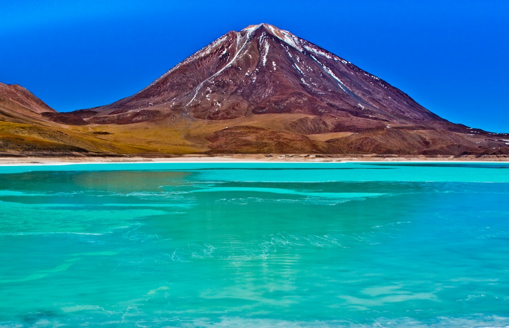

Najwyższe szczyty Ameryki Południowej
Kontynenty


Aconcagua

- Wysokość: 6 962 m
- Kraj: Argentyna
- Pasmo: Andy
- Wybitność: 6 962 m
- Pierwsze wejście: 14 stycznia 1897 – Matthias Zurbriggen
- Współrzędne: 32°39′20″S 70°00′57″W
Ojos del Salado
- Wysokość: 6 893 m
- Kraj: Argentyna, Chile
- Pasmo: Andy
- Wybitność: 3 688 m
- Pierwsze wejście: 26 lutego 1937 – Jan Alfred Szczepański,
Justyn Wojsznis - Współrzędne: 27°06′S 68°32′W